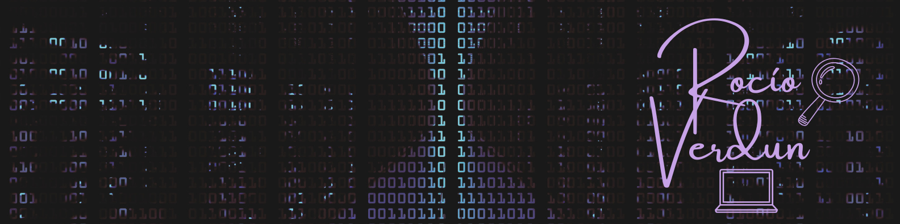

"Argentina Programa" #YOPROGRAMO


Rocio Denise Verdun
Full Stack Developer Jr
Actualmente cursando la etapa #yoprogramo de la iniciativa "Argentina Programa" y expandiendo mis conocimientos en programacion, principalmente en el area de front end, en forma autodidacta. Estudiante de Criminalistica en Universidad Siglo 21.
Merceria Neni
Enero 21 - Dic 21
Branding - Community Management - Marketing Digital
Ministerio de Desarrollo Productivo
Programador Full Stack Jr
Jun 22 - Enero 23
Universidad Siglo 21
Tecnicatura en Investigacion de la Escena del Crimen
Mar 2021 - Actualidad
Instituto Universitario de la Policia Federal Argentina
Licenciatura en Enfermeria
Mar 2016 - Dic 2018
Instituto Presidente Sarmiento
Bachiller con Orientacion en Ciencias Sociales
Mar 10 - Dic 15
Idioma Ingles
Nivel: Avanzado
First Certificate in English
University of Cambridge
English for the 21st. Century
British Council
Portfolio Web
Fecha de Realizacion: Jun 22 - Enero 23
Portfolio personal desarrollado como proyecto final de la etapa #yoprogramo de la iniciativa "Argentina Programa" empleando lenguajes y frameworks varios